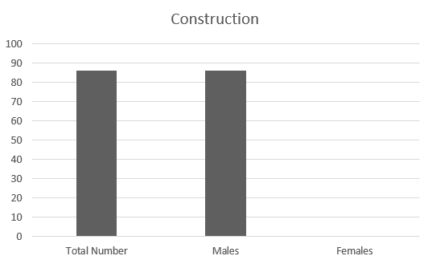

Here, you’ll learn all about construction techniques, architectural design, and project management. You’ll develop the skills to plan and execute construction projects efficiently and safely. Whether you aim to work on-site or move into architectural design, this course opens up a lot of opportunities
Enrollment and Distribution Statistics

- Enrolled Students
The chart illustrates the enrollment statistics for the Construction and Building specialty. A total of 86 students are enrolled, all of whom are males. The absence of female students in this field highlights a significant gender disparity in enrollment, indicating potential barriers that may deter young women from pursuing careers in construction
The team collected this data from BTEC EMIS-vocational Dept, and it pertains only to Zarqa Governorate